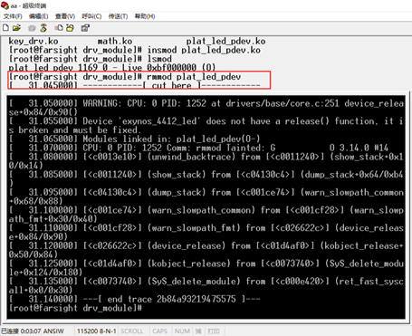

Linux驱动卸载时出现“Device 'xxx' does not have a release()
问题描述：
Linux驱动卸载时出现“Device 'xxx' does not have a release() function, it is broken and must be fixed”

问题解决：
在用platform bus方法编写Linux内核驱动模块时，在模块卸载过程中，如果系统出现提示“Device 'xxx' does not have a release() function, it is broken and must be fixed.” 说明系统在卸载是找不到release()函数，这个函数对应在结构体struct platform_device中的成员struct device中的void (*release)(struct device *dev)方法。
所以只需要在代码中增加一个release方法，并且注册到struct device成员中就可以了。比如：
在代码中定义static void platform_device_test_release(struct device *dev);
在struct platform_device结构体定义添加release函数注册：
static struct platform_device test_dev =
{
.name = DEV_NAME,
.id = 0,
.num_resources = 1,
.resource = serial_test_resource,
.dev = {
.release = platform_device_test_release,
}
};
这样，驱动模块卸载时，就不会出现以上的错误了。